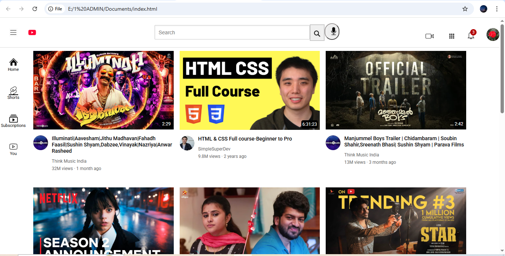
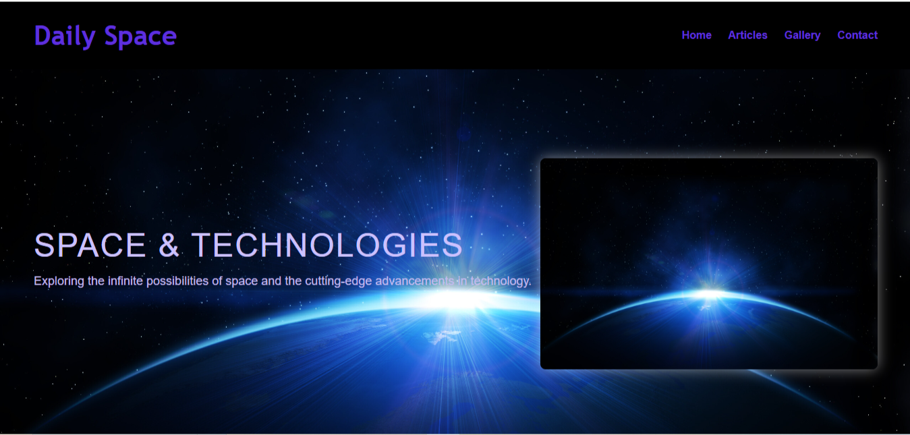

Front End Projects

Youtube Clone
- The YouTube Clone project is a front-end development work created using HTML and CSS, aimed at replicating the layout and design of YouTube’s homepage.
- This project demonstrates the application of core web technologies like CSS Grid, flexbox, image positioning, and responsive layout techniques.
- It features structured video thumbnails, navigation elements, sidebar menus, and interactive link styling to reflect the familiar YouTube user interface.
- Through this project, I gained hands-on experience in designing responsive web pages and learned how to organize content and components effectively laying a solid foundation for building real-world websites.
View Project

Multiple Landing Pages
- The Space Articles project is a fully responsive, multi-page website built using HTML, CSS, and JavaScript, showcasing daily updates and informative content about space technologies.
- Designed with a clean and structured layout, the project includes multiple landing pages for smooth navigation between articles, offering a seamless user experience across all devices.
- By incorporating Bootstrap, the project efficiently utilizes pre-defined styles and components to enhance visual appeal and functionality.
- This project not only demonstrates front-end development skills but also emphasizes adaptive design, user engagement, and effective content presentation.
View Project